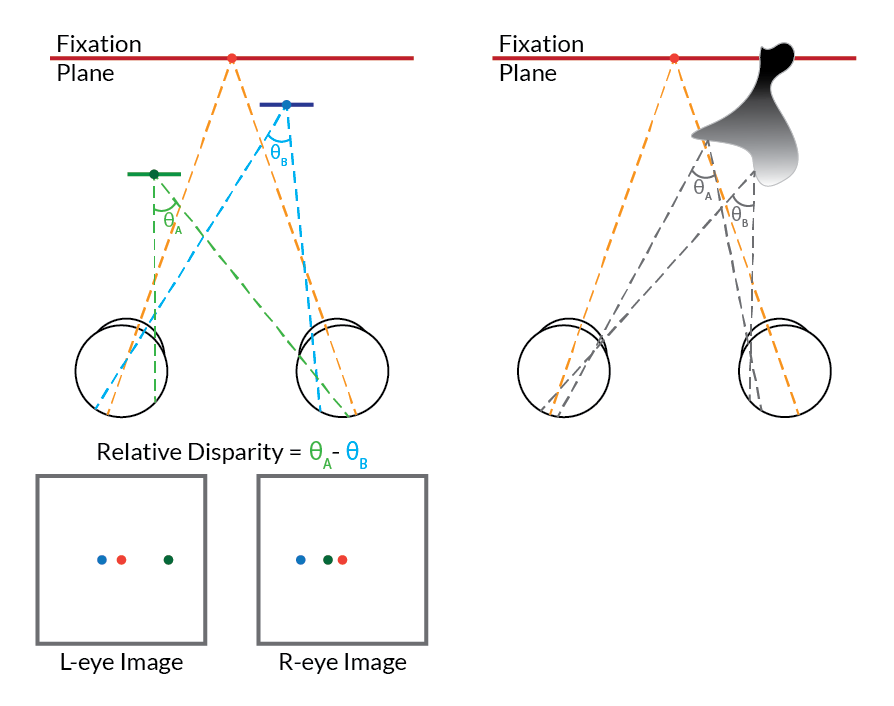

Copyright 2020 Ramanujan Srinth
Stereograms and Kinematograms
Rendering solid and flat shape stimuli using stereo and motion cuesIn my PhD, I figured out a way to render 3D volumetric shapes as stereograms and kinematograms. The idea behind stereopsis is illustrated in the figure.
It depicts a top view of a primate with frontally placed eyes looking at a spot (“fixation”). Because of the distance between the eyes, the two points (blue and green) which are at different depths relative to the fixation spot (red) project at different relative distances from the fixation spot on the retinae. You can extend this for 3D shapes. To render these stereograms, Alexandriya (my colleague in Connor lab) helped me find the visible vertices of 3D shapes using Blender, and then I used these vertices to displace a field of randomly placed dots on a plane by the requisite amount (the dots that lay outside the contour of the shape remained behind at a constant depth). Then, based on distance between the eyes, I calculated the left or right displacement of these dots to be rendered on either the left or right screens. I made the 2D shape counterpart by simply displacing the random field of dots to a constant depth. If you cross or uncross your eyes on the stereogram below, you should be able to see the 3D shape. In the experiments, I used a haploscope to project the left and right images into the two eyes.
The kinematogram was a bit more fiddly. That required that I find the visible vertices for every frame of the shape’s rotation and then make the dots appear and disappear instead of jumping back to the field of background dots. I found that I got the best percept of the 2D shape when the axis of rotation was a little behind the shape itself. (Open the animations in a new tab to view them in high resolution.)
These two shape display manipulations were definitely my favourite hard problems I solved in my PhD. It was fun watching unsuspecting prospective graduate students “see” the shape appear from a field of random dots when I displayed these for them on the haploscope during lab demos.